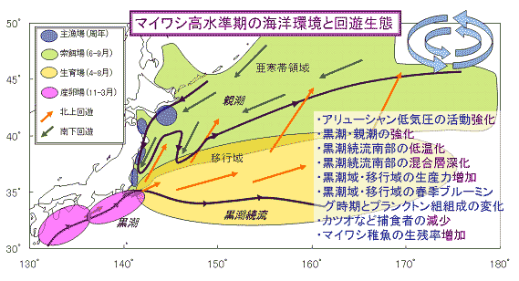

|
（３）マイワシ資源変動機構のまとめ １９８８年以降、産卵親魚量が多かったにもかかわらず、なぜ加入量が急激に減少したのかが大きな問題です。産卵親魚が多かったので多量の卵が確認されるとともに、産卵ふ化直後の仔魚や稚魚初期の成長状況は悪くないことが調査から確認されていますが、実際に漁場に加入してくる０歳魚（生後８カ月程度）の数は大幅に少なくなっています。このことから、稚魚から幼魚になる段階での生き残りが極めて少なかったと考えられます。上述したマイワシと海洋環境との関係を踏まえると、マイワシの資源変動機構について以下のように考えられます。 １）マイワシ太平洋系群の高水準期の生態構造 １９８０年代の資源が高水準期のマイワシの海洋環境と回遊生態を示しています。１９８０年代は、アリューシャン低気圧の活動が強く、親潮の南下や黒潮の流れが強まり、黒潮続流南部の水温の低下が見られています。このような状況下では、親潮の南下や黒潮続流南部の混合層の深化により、稚魚の成育場である移行域のプランクトンの発生が多くなり（プランクトン組成の変化により稚魚の発育段階に応じた適当な大きさのプランクトンが供給されることも考えられます。）、成育に適した水域面積が大きく拡大します。また、黒潮続流南部の水温低下によって稚魚期の捕食者であるカツオ・ビンナガ等暖海性大型回遊魚の北上を遅らせ、これら外敵との遭遇を減少しているとも考えられます。これらのことからマイワシ稚魚は稚魚期から幼魚期にかけて生き残りが極めて高かったと考えられます。 このような生態構造は、資源の高水準期においても、年によって多かれ少なかれ変動が生じていると考えられます。
 [前ページ] [次ページ] [1] [2] [3] [4] [5] [6] [7] [8] [9] [10] [11] [12] 13 [14] [15] [16] [17] |